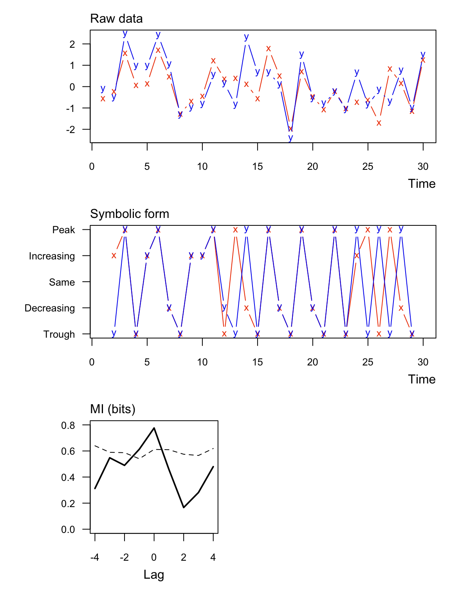
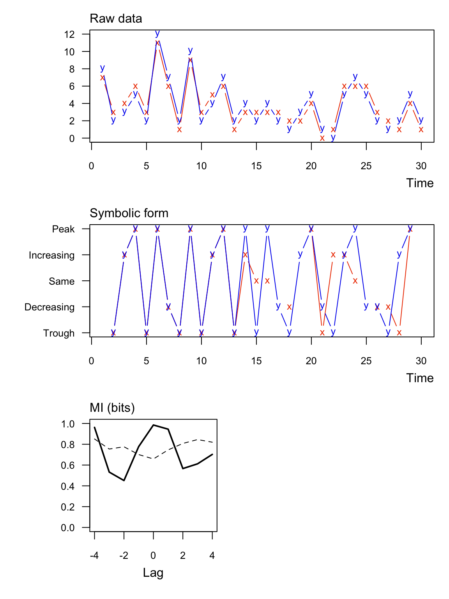
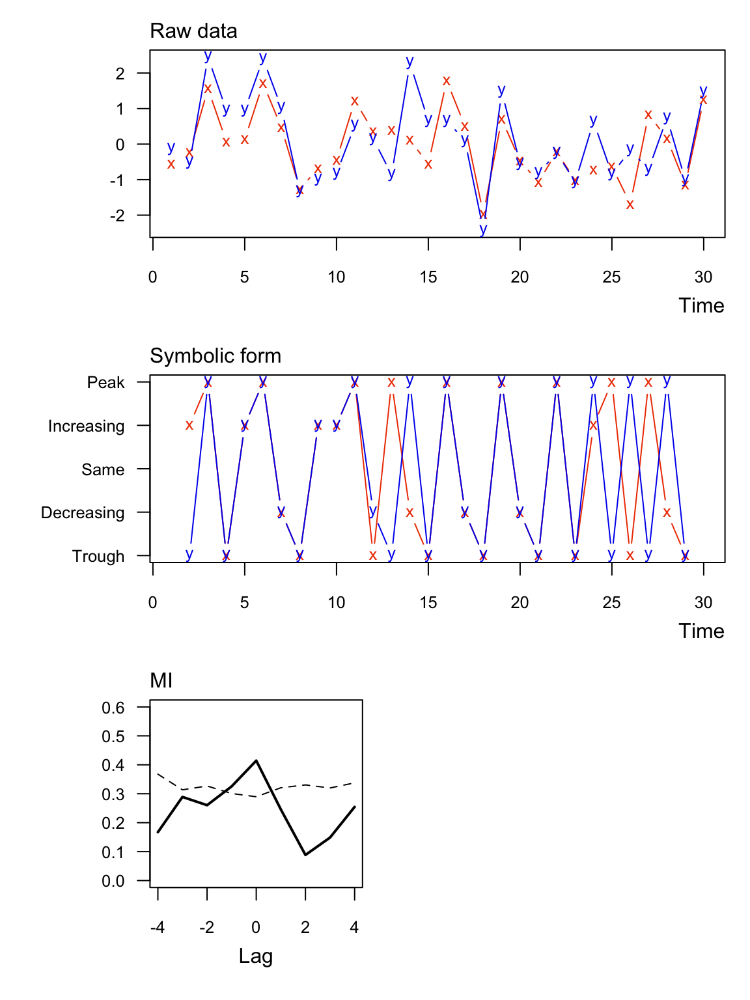
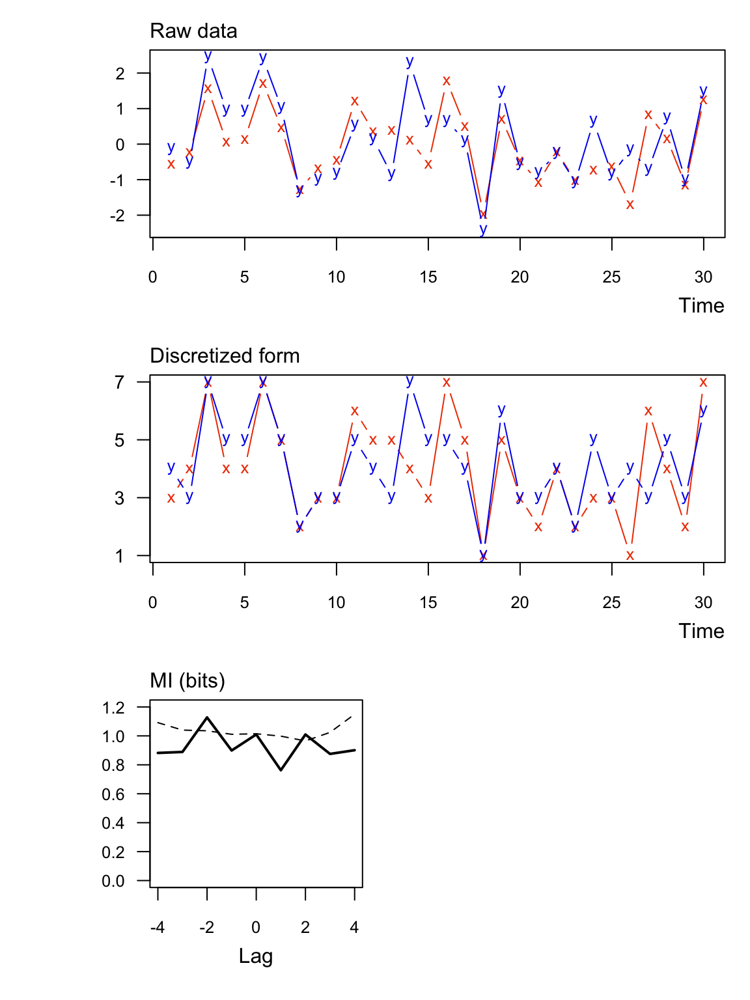

muti computes the mutual information \((\mathrm{MI})\) contained in two vectors of discrete random variables. muti was developed with time series analysis in mind, but there is nothing tying the methods to a time index per se.
Mutual information \((\mathrm{MI})\) estimates the amount of information about one variable contained in another; it can be thought of as a nonparametric measure of the covariance between the two variables. \(\mathrm{MI}\) is a function of entropy, which is the expected amount of information contained in a variable. The entropy of \(X\), \(\mathrm{H}(X)\), given its probability mass function, \(p(X)\), is
\[ \begin{align} \mathrm{H}(X) &= \mathrm{E}[-\log(p(X))]\\ &= -\sum_{i=1}^{L} p(x_i) \log_bp(x_i), \end{align} \]
where \(L\) is the length of the vector and \(b\) is the base of the logarithm.muti uses base-2 logarithms for calculating the entropies, so \(\mathrm{MI}\) is expressed in units of “bits”. In cases where \(p(x_i) = 0\), then \(\mathrm{H}(X) = 0\).
The joint entropy of \(X\) and \(Y\) is
\[ \mathrm{H}(X,Y) = -\sum_{i=1}^{L} p(x_i,y_i) \log_b p(x_i,y_i). \]
where \(p(x_i,y_i)\) is the probability that \(X = x_i\) and \(Y = y_j\). The mutual information contained in \(X\) and \(Y\) is then
\[ \mathrm{MI}(X;Y) = \mathrm{H}(X) + \mathrm{H}(Y) - \mathrm{H}(X,Y). \]
One can normalize \(\mathrm{MI}\) to the interval [0,1] as
\[ \mathrm{MI}^*(X;Y) = \frac{\mathrm{MI}(X;Y)}{\sqrt{\mathrm{H}(X)\mathrm{H}(Y)}}. \]
Input. At a minimum muti requires two vectors of class numeric or integer. See ?muti for all of the other function arguments.
Output. The output of muti is a data frame with the \(\mathrm{MI}\) MI_xy and respective significance threshold value MI_tv at different lags. Note that a negative (positive) lag means X leads (trails) Y. For example, if length(x) == length(y) == TT, then the \(\mathrm{MI}\) in x and y at a lag of -1 would be based on x[1:(TT-1)] and y[2:TT].
Additionally, muti produces a 3-panel plot of
The significance thresholds are based on a bootstrap of the original data. That process is relatively slow, so please be patient if asking for more than the default mc=100 samples.
muti computes \(\mathrm{MI}\) based on 1 of 2 possible discretizations of the data in a vector x:
Symbolic. (Default) For 1 < i < length(x), x[i] is translated into 1 of 5 symbolic representations based on its value relative to x[i-1] and x[i+1]: “peak”, “decreasing”, “same”, “trough”, or “increasing”. For example, the symbolic translation of the vector c(1.1,2.1,3.3,1.2,3.1) would be c("increasing","peak","trough"). For additional details, see Cazelles (2004).
Binned. Each datum is placed into 1 of n equally spaced bins as in a histogram. If the number of bins is not specified, then it is calculated according to Rice’s Rule where n = ceiling(2*length(x)^(1/3)).
Here’s an example with significant information between two numeric vectors. Notice that none of the symbolic values are the “same”.

## lag MI_xy MI_tv
## 1 -4 0.312 0.640
## 2 -3 0.548 0.590
## 3 -2 0.490 0.587
## 4 -1 0.613 0.540
## 5 0 0.776 0.612
## 6 1 0.459 0.610
## 7 2 0.166 0.575
## 8 3 0.282 0.565
## 9 4 0.480 0.619Here’s an example with significant information between two integer vectors. Notice that in this case some of the symbolic values are the “same”.

## lag MI_xy MI_tv
## 1 -4 0.962 0.851
## 2 -3 0.532 0.754
## 3 -2 0.451 0.776
## 4 -1 0.778 0.701
## 5 0 0.985 0.659
## 6 1 0.945 0.746
## 7 2 0.566 0.808
## 8 3 0.612 0.845
## 9 4 0.703 0.820Here are the same data as Ex 1 but with \(\mathrm{MI}\) normalized to [0,1] (normal = TRUE). In this case the units are dimensionless.

## lag MI_xy MI_tv
## 1 -4 0.167 0.368
## 2 -3 0.289 0.314
## 3 -2 0.260 0.327
## 4 -1 0.325 0.301
## 5 0 0.414 0.290
## 6 1 0.246 0.321
## 7 2 0.088 0.331
## 8 3 0.149 0.320
## 9 4 0.255 0.338Here are the same data as Ex 1 but with regular binning instead of symbolic (sym = FALSE).

## lag MI_xy MI_tv
## 1 -4 0.882 1.092
## 2 -3 0.889 1.040
## 3 -2 1.128 1.035
## 4 -1 0.899 1.011
## 5 0 1.010 1.015
## 6 1 0.763 0.998
## 7 2 1.010 0.965
## 8 3 0.875 1.024
## 9 4 0.901 1.150Please cite the muti package as:
Scheuerell, M. D. (2017) muti: An R package for computing mutual information. https://doi.org/10.5281/zenodo.439391
See citation("muti") for a BibTeX entry.